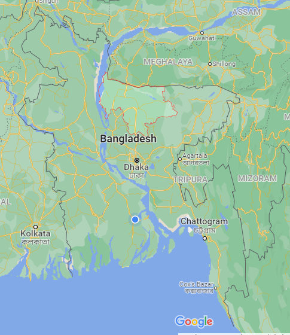

ময়মনসিংহ/MYMENSINGH
ময়মনসিংহের ইতিহাস অতিশয় সমৃদ্ধ। উত্তরে গারো পাহাড়, দক্ষিণে ভাওয়াল মধুপুরের বনাঞ্চল, পশ্চিমে ব্রহ্মপুত্র নদ থেকে উৎসারিত মেঘনার জল বেষ্টনী এবং
পূর্বে সোমেশ্বরী তিতাস, সুরমা ও মেঘনা নদীর অববাহিকা অঞ্চল, প্রাকৃতিক প্রাচীর দ্বারা পরিবেষ্টিত ।
হাওর জঙ্গল মইষের শিং, এই তিনে ময়মনসিং’ প্রবাদ-প্রবচনে এভাবেই পরিচয় করানো হতো এক সময় ।

নামকরণের ইতিহাস
ময়মনসিংহ জেলার নামকরণ নিয়ে ইতিহাসবিদদের মাঝে ভিন্ন মত প্রচলিত আছে। আর ষোড়শ শতাব্দীতে বাংলার স্বাধীন
সুলতান সৈয়দ আলাউদ্দিন হোসেন শাহ তার পুত্র সৈয়দ নাসির উদ্দিন নসরত শাহ’র জন্য এ অঞ্চলে একটি নতুন রাজ্য
গঠন করেছিলেন, সেই থেকেই নসরতশাহী বা নাসিরাবাদ নামের সৃষ্টি। মুসলিম যুগের উৎস হিসেবে নাসিরাবাদ নামটিও
আজ শিক্ষা প্রতিষ্ঠান ছাড়া আর কোথাও উল্লেখ করা হচ্ছে না। ১৭৭৯-তে প্রকাশিত রেনেল এর ম্যাপে মোমেসিং নামটি
বর্তমান 'ময়মনসিংহ' অঞ্চলকেই নির্দেশ করে। তার আগে আইন-ই-আকবরীতে ‘মিহমানশাহী’ এবং ‘মনমনিসিংহ’
সরকার বাজুহার পরগনা হিসাবে লিখিত আছে; যা বর্তমান ময়মনসিংহকেই ধরা যায়।
ইতিহাস ও ঐতিহ্য
১ মে ১৭৮৭ খ্রিস্টাব্দে ময়মনসিংহ জেলা গঠিত হয় যার প্রথম কালেক্টর ছিলেন মিঃ এফ লি গ্রোস। এর আগে খাগডহর
ইউনিয়নের বেগুনবাড়ীর কোম্পানির কুঠিসহ বিভিন্ন জায়গায় কাচারী বসত। কুঠি ব্রহ্মপুত্রের ভাঙনে বিলীন হলে শহরের
উত্তর অংশে খাগডহরে কাচারী স্থাপনের উদ্যোগ নেওয়া হয়। কিন্তু ব্রহ্মপুত্র নদের ভাঙ্গনের কারণে সেই উদ্যোগও ভেস্তে
যায়। পরবর্তীতে কিশোরগঞ্জ জেলার হোসেনপুরের দক্ষিণে কাওনা নদীর তীরে ‘দগদগা’ নামক প্রাচীন বাণিজ্যকেন্দ্রে জেলা
শহর স্থাপন করার উদ্যোগ নেওয়া হয়। ঐ অঞ্চলের জমিদাররা এই সিন্ধান্তের বিরোধিতা করে। কর্তৃপক্ষ তাই ১৭৯১ সালের
সেপ্টেম্বর মাসে সেহড়া মৌজায় নাসিরাবাদ নাম দিয়ে জেলা শহরের পত্তন হয় । শহর স্থাপিত হওয়ার পর ৮ই এপ্রিল
১৮৬৯ খ্রিস্টাব্দে পৌরসভা গঠিত হয় নাসিরবাদ মিউনিসিপ্যালিটি। বঙ্গদেশে এটি প্রথম এবং উপমহাদেশে এটি ছিল দ্বিতীয়
পৌরসভা। মি. আরপর্চা ছিলেন পৌরসভার প্রথম অফিসিয়াল চেয়ারম্যান। প্রথম নন অফিশিয়াল চেয়ারম্যান ছিলেন চন্দ্রকান্ত
ঘোষ।[১] কালেক্টরেট ভবন ছিল ময়মনসিংহ শহরের কেন্দ্রবিন্দু। ১৭৮৭ খ্রিস্টাব্দে সরকারী ডাক ব্যবস্থার প্রচলন করা হয়।
১৮৮৭ খ্রিস্টাব্দে জেলা বোর্ড গঠন করা হয়। প্রথম সরকারি চিকিৎসা কেন্দ্র চালু করা হয় ১৭৯১ খ্রিস্টাব্দে। ময়মনসিংহ শহর
থেকে প্রথম মুদ্রিত পুস্তক প্রকাশিত হয় ১৮১৫ খ্রিস্টাব্দে। ১৮৪৬ খ্রিস্টাব্দে প্রতিষ্ঠিত হয় প্রথম ইংরেজি স্কুল। ময়মনসিংহ জিলা
স্কুল প্রতিষ্ঠা করা হয় ১৮৫৩ খ্রিস্টাব্দে। জেলার প্রথম আদম শুমারী পরিচালিত হয় ১৮৮৩ খ্রিস্টাব্দে। টেলিগ্রাফ অফিস স্থাপন
১৮৮৬ খ্রিস্টাব্দে। । ঢাকা-ময়মনসিংহ রেলপথ চালু ১৮৮৯ খ্রিস্টাব্দে, এবং ময়মনসিংহ-জগন্নাথগঞ্জ রেলপথ চালু হয় ১৮৬৫
সনে। ১৯০৫ সালে নাসিরবাদ নাম বদলে ময়মনসিংহ পৌরসভা নামকরণ হয়। ১৯১০ সালে পৌরসভার একতলা পাকা ভবন
নির্মাণ হয় যেটি এখনো ব্যবহৃত হচ্ছে।